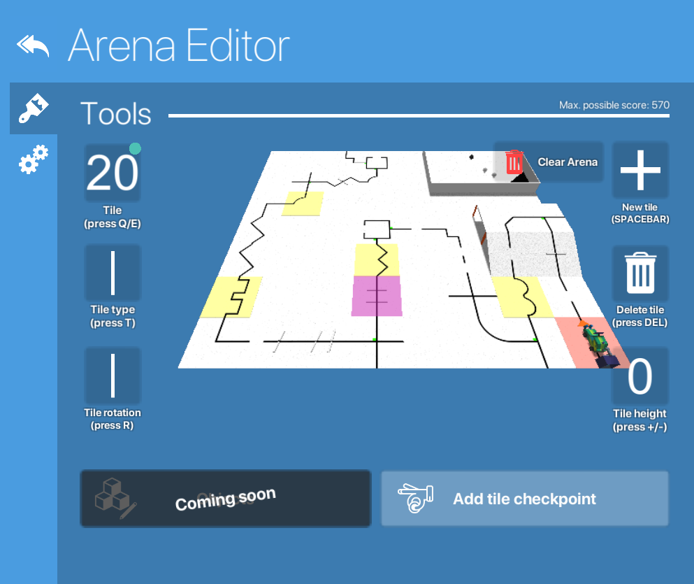

Editor
arenas:editor
The arena editor is a JSON manipulater embedded in the simulator. It is capable of editing the arena code and regenerating the arena automatically. There are two main screens inside the editor, the tile editing screen and the arena settings.

The tile editing screen works with a pink pointer, where the user using the arow or WASD keys can move in order to change properties by pressing other buttons such as "q/e" for ID manipulation, "+/-" for the tile height, "r" for rotation and "del" for deletion.